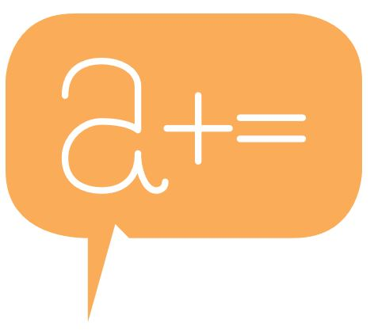
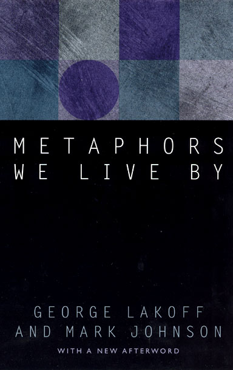

Alex Ocampo
Field of Study
I'm a senior double-majoring in Linguistics and Digital Narrative & Interactive Design. I transferred to the University of Pittsburgh in Fall 2021 from Bard College at Simon's Rock, where I received my Associate's Degree. I originally enrolled at Pitt for Linguistics with a Computer Science minor, and after taking a few DNID courses as GenEds I realized how much I loved analyzing media, exploring creative processes, and just making stuff with computers. Currently, I work at Pitt's Speech and Neural Systems Lab and can see myself happily pursuing computational linguistics as a career. It's probably what's gonna happen. But as I experience more and more of the expressive and outward-facing possibilities of these digital tools, I wouldn't be surprised if I completely switched up my career path some day.

Knowledge, Tools, and Skills
I have a lot of surface knowledge across a variety of media; I practice digital illustration, have fair literacy in programming (mostly in Python), took Composing Digital Media last semester, and know my way around some Adobe programs & their free equivalents from a variety of other classes. Dominantly, though, my excitement lies in media analysis and critically considering how these methods inform our perceptions. I'd like to imagine those interests are evident in other projects I've made. Ultimately I am most comfortable with (synthesized) visual & written media, and would like to spend my time exporing their intersections, maybe through media like webcomics, zines, and websites.

Potential Project
I'm not sure what the exact topic will be yet, but I am interested in exploring how the ways in which we communicate affect our worldviews. It will probably be a project centered around self-talk on the Internet and the dominant ways people describe themselves on social media. What are the trends, key terms, and metaphors we use when we talk about ourselves online? I'm not entirely sure what I intend to prove yet but there is certainly something there. Our performances of ourselves are so constantly public and influenced by, well, influencers, and I wonder what that might mean for our generation. I also wonder what place fiction works may have in this class as a tool to highlight such subjects. I would probably prefer this to culminate as a webcomic or narrative website, ultimately some piece of media that can exclusively exist online.
"[...] metaphor is pervasive in our everyday life, not just in language but in thought and action." —Metaphors We Live By (Lakoff, Johnson)

In the Future
As I mentioned, I plan on going into linguistic research in the future, probably pursuing higher education somewhere along the line. However, I do have wishes to continue creative ventures even if they stay relegated as a hobby. Ultimately I just want to do work that asks and attempts to answer questions about how we as individuals think and behave, and consider what that means on a broader scale. Whether that comes from academic inquiry or artistic introspection is yet to be seen.

generated by Pitt Fuego
Why make a spark when you can light a fire?